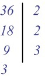

Онлайн расчет наибольшего общего делителя (НОД) чисел
Введите ваши числа:Наибольший общий делитель (НОД)
Начнем с того, что разберемся, что же такое НОД. Возьмем два числа a и b. Наибольший общий делитель — это такое число, на которое делятся без остатка оба числа a и b. Записывается оно следующим образом НОД (a;b).
Наибольший общий делитель находится для двух и более чисел (двух, трех, четырех и т.д.). Невозможно найти НОД для одного числа.
Пример. Есть два числа, например, 18 и 12. найдем для них наибольший общий делитель.
Рассмотрим вначале число 18. Оно делится без остатка на число 1 и на само себя, т.е. число 18. Также 18 делится без остатка на следующие числа: 2, 3, 6 и 9. получаем следующее:
18 : 1 = 18;
18 : 2 = 9;
18 : 3 = 6;
18 : 6 = 3;
18 : 9 = 2;
18 : 18 = 1.
То же самое проделаем с числом 12. Оно делится без остатка на 1, само себя, т.е число 12, а также на 2, 3, 4 и 6, получаем:
12 : 1 = 12;
12 : 2 = 6;
12 : 3 = 4;
12 : 4 = 3;
12 : 6 = 2;
12 : 12 = 1.
Как Вы могли заметить, во всех примерах деление происходит без остатка (можно еще сказать, что остаток 0). Выпишем все делители числа 18:
1, 2, 3, 6, 18.
А теперь делители числа 12:
1, 2, 3, 4, 6, 12.
И последний этап — найти наибольшее из этих чисел. Как видим, это число 6, оно и будет наибольшим общим делителем чисел 18 и 12. Ответ записывается следующим образом: НОД(18,12) = 6. Озвучить ответ можно так: «Наибольший общий делитель чисел 18 и 12 равен 6».
Таким образом, найден НОД (наибольший общий делитель) двух чисел. Для нахождения НОД чаще всего применяют два способа, которые рассмотрены во вкладке "Примеры".
Метод разложения на простые множители
В этом методе используется понятие простых чисел и он состоит из трех этапов.
Задача. Найти НОД чисел 36 и 54.
Первый этап.
Находим простые множители обоих чисел. Сделаем это для числа 36. Посмотрим, делится ли это число на 2? Да, делится, т.е. 36 : 2 = 18, поэтому записываем:
Продолжаем то же самое с числом 9. Делится ли оно на 2? Нет. Подбираем следующее простое число — это 3. Делится ли 9 на 3? Да. Можно записать:
И наконец, посмотрим на число 3. Оно не делится на 2, но делится на само себя, т.е. 3 и окончательно для числа 36 пишем:
Справа от черты мы получили простые множители числа 36. Выпишем делители этого числа в порядке их возрастания: Д(36) = {2, 2, 3, 3}.
Далее такие же действия проведем для числа 54.
Смотрим, делится ли число 54 на 2? Да, 54 : 2 = 27. Записываем:
Делится ли 27 на 2? Нет. А на 3? Да, 27 : 3 = 9.
Смотрим на 9. На 2 не делится, но делится на 3 т.е. 9 : 3 = 3. Пишем:
А дальше, 3 делится на себя и на этом разложение (а значит и первый этап) заканчивается.
Выписываем множители числа 54: Д(54) = {2, 3, 3, 3}.
Дальше мы сравниваем простые множители обоих чисел: Д(36) = {2, 2, 3, 3}. Д(54) = {2, 3, 3, 3}
Второй этап нахождения НОД. Находим одинаковые делители для обоих чисел и подчеркиваем их.
Д(54) = {2, 3, 3, 3}. Д(36) = {2, 2, 3, 3}.
Третий этап нахождения НОД
Перемножаем одинаковые делители. 2 · 3 · 3 = 18.
Полученное число и является наибольшим общим делителем чисел 36 и 54. Поэтому записываем:
Ответ: НОД(36, 54) = 18.